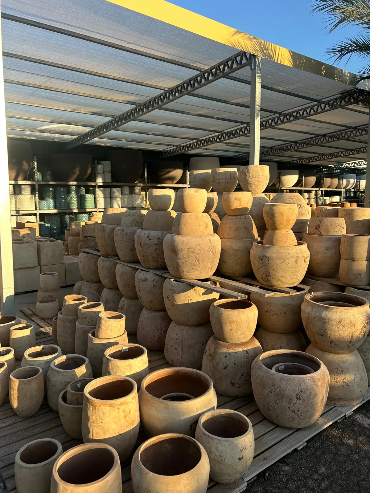
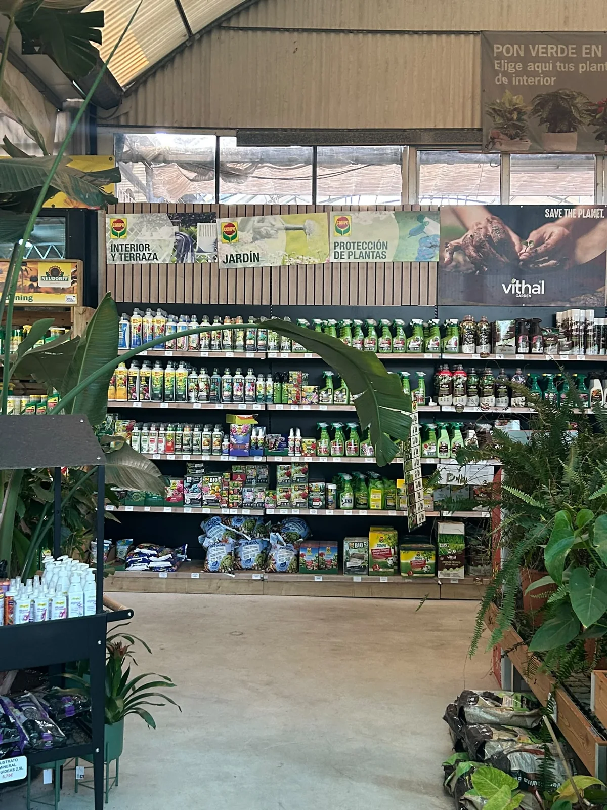
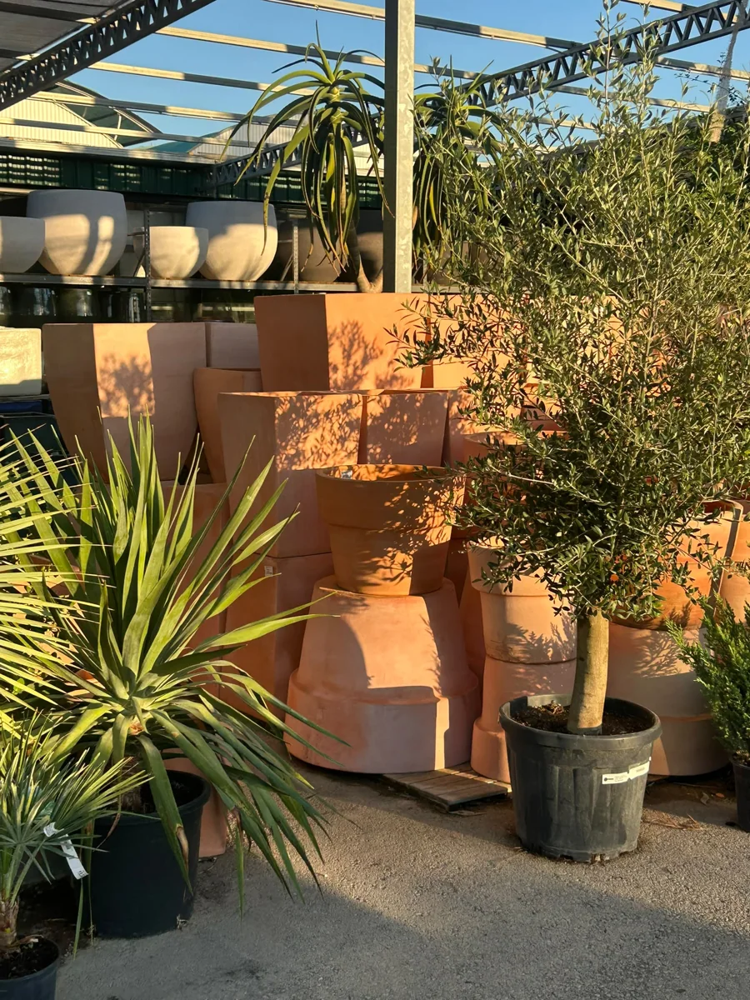

01 · BARRO Y CERÁMICA
01 · BARRO Y CERÁMICAUn hogar para cada planta
Macetas de interior y exterior, texturas naturales y tamaños para cada rincón. Te ayudamos con el drenaje y las proporciones.
Pregunta por una medida
MACETAS, MATERIALES Y CUIDADOS
La planta es solo el principio. Cerámica, herramientas y pequeños detalles para cuidarla y disfrutar de tu espacio.
CADA DETALLE CUENTA
Materiales y piezas que encajan con tu planta, con tu casa y con nuestra forma mediterránea de vivir.
01 · BARRO Y CERÁMICAMacetas de interior y exterior, texturas naturales y tamaños para cada rincón. Te ayudamos con el drenaje y las proporciones.
Pregunta por una medida
02 · RIEGO Y HERRAMIENTASRiego, herramientas, sustratos y abonos para que cada planta tenga lo que necesita.
Consulta lo que necesitas 03 · HOGAR Y EXTERIOR
03 · HOGAR Y EXTERIORCestas, texturas y complementos para dar calidez a tu porche, tu salón o tu terraza.
Descubre la floristería
TODO EN EL MISMO PASEO
Trae una idea, una foto o las medidas de tu espacio. Podemos ayudarte a combinar planta, recipiente, sustrato y riego para que todo funcione junto.
PARA QUE TODO ENCAJE
Desde el primer trasplante hasta el trabajo de un profesional. Pregúntanos por formatos, medidas y disponibilidad.
Texturas cálidas y distintos diámetros para cada planta.
Formatos y acabados que encajan con tu casa.
Privacidad para terrazas, pérgolas y linderos.
Soluciones para maceta y jardín, adaptadas al espacio.
Lo que necesitas para el trabajo del día a día.
La base adecuada según la especie y el cultivo.
PARTICULARES Y PROFESIONALES
Para un material concreto o una compra profesional, contacta con el equipo antes de venir.